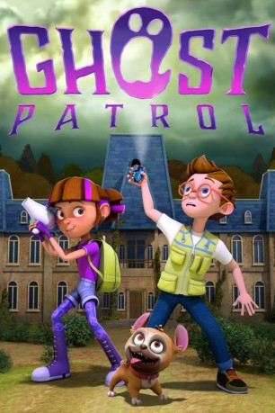

#7217 Ghost Patrol
 gesehen am 15.10.2017
gesehen am 15.10.2017
 
 IMDB-Wertung: 5.7 / 10
IMDB-Wertung: 5.7 / 10  Metascore: 0
Metascore: 0 
Gabi and Spence, and the Spooky Dog, are the "Ghost Patrol", Their Towns supernatural pest control, but they have never seen a real ghost. When they get a call to investigate the old Geist Manor, they are about to find the proof they are looking for - and a whole lot more.
Jahr: 2016
Dauer: 47 Minuten
FSK:
Land: Kanada Studio: Family Channel, TheTonspuren: DD5.1 - ,
Untertitel: Deutsch, Englisch,
Auflösung: 1080p (1920x1080) Größe: 1730 MB
Genre: Abenteuer, Animation/Trick
Regisseur: Karen J. Lloyd
Drehbuch: Marcy Brown
Soundtrack:
Darsteller:
Datei: X:\Kinder Filme (G-M)\Ghost Patrol (2016, FSK, 1920x1080).mkv seit 09.10.2017
Festplatte: Kinder-Filme+Trick
 Es gibt insgesamt 84 Filme in der Gruppe 'Kinder Filme (G-M)'
Es gibt insgesamt 84 Filme in der Gruppe 'Kinder Filme (G-M)'